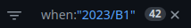
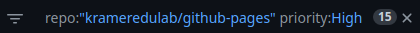
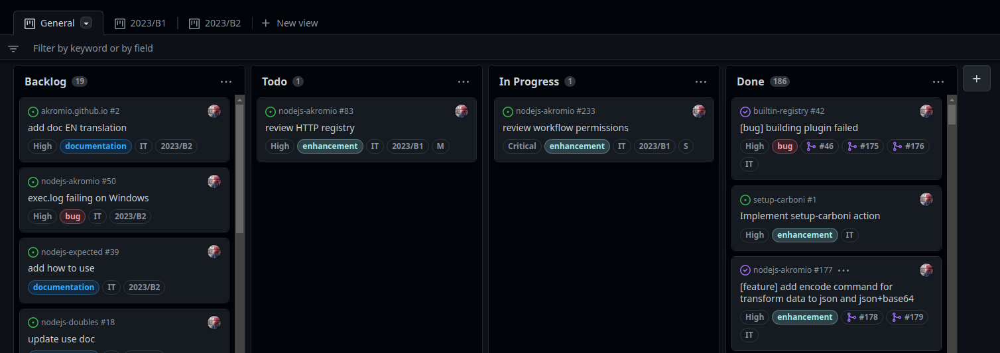
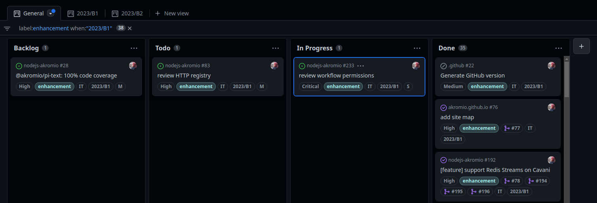

Filtrado de ítems
Tanto las vistas como otros componentes de GitHub Projects permiten aplicar filtros con los que seleccionar ítems que cumplan una determinada condición. Saber realizar este filtrado es muy importante porque nos ayuda a enfocarnos en aquello que realmente nos interesa.
Al finalizar, sabrá:
-
Qué es el filtrado.
-
Cómo filtrar.
-
Qué tipo de predicados se pueden añadir a los filtros.
-
Cómo añadir predicados a los filtros.
Introducción
El filtrado (filtering) es la operación mediante la cual seleccionamos determinados ítems de un proyecto con objeto de presentarlos en una vista o limitar los que deseamos visualizar en el catálogo de ítems archivados o en los que tener en cuenta en un gráfico. Todo filtrado utiliza un filtro (filters), una expresión, definida en un formato especial, que debe cumplir todo ítem para aparecer en la vista o el resultado de la operación. Estos filtros se componen de predicados, donde un predicado (predicate), también conocido formalmente como calificador (qualifier), es una subexpresión del filtro como, por ejemplo, que el valor del campo Status sea Todo.
A continuación, se muestra un filtro con un único predicado:

Cuando un filtro presenta varios predicados, se unen mediante un operador lógico Y (AND), por lo que todos los ítems seleccionados cumplirán con todos los predicados. El Y es implícito, los distintos predicados se separan por espacio. Ejemplo:

Predicado de comparación
La comparación (comparison) es una operación que compara el valor de un campo con otro dado:
| Predicado | Descripción |
|---|---|
| campo:valor | Por igualdad. |
| campo:>valor | Mayor que. |
| campo:=>valor | Mayor o igual que. |
| campo:<valor | Menor que. |
| campo:<=valor | Menor o igual que. |
| campo:valor..valor | El valor del campo se encuentra en el rango inclusivo dado. |
| campo:valor* | El valor del campo debe comenzar por el texto dado. |
| campo:*valor | El valor del campo debe finalizar en el texto dado. |
| campo:*valor* | El valor del campo contiene el texto dado. |
En el siguiente ejemplo, el predicado selecciona aquellos ítems cuyo campo status sea Todo:
status:Todo
Si el valor es textual y contiene espacios, delimitaremos el texto por comillas dobles (").
No existe la comparación por desigualdad, aunque se puede simular con una comparación por negación, la cual consiste en añadir un guion (-) antes del nombre del campo.
En el siguiente ejemplo, se seleccionan todos los ítems cuyo estatus sea distinto de Todo:
-status:Todo
También es posible indicar que un determinado campo sea uno cualquiera de varios dados. Esto se consigue separando cada valor por una coma:
campo:valor1,valor2
Para comprobar si un determinado texto aparece en algún campo, se indicará como predicado ese texto, sin precederlo por campo:. En el siguiente ejemplo, se seleccionarán todos los ítems que presenten el texto plugin en su título o en cualquier campo textual:
plugin
Predicado de inclusión
La inclusión (inclusion) se utiliza para comprobar si un campo de tipo lista tiene un determinado valor, uno de varios valores dados o todos los valores indicados:
| Predicado | Descripción |
|---|---|
| campo:valor | Comprueba si el campo de tipo lista contiene el valor dado. |
| campo:valor1,valor2 | En caso de un campo de tipo lista, comprueba si contiene alguno de los valores dados; en caso de campo simple, si su valor es alguno de los dados. |
| campo:valor1 campo:valor2 | Comprueba si el campo de tipo lista contiene los valores dados. No alguno, sino todos los indicados. |
Si deseamos decir que no contenga el valor o los valores dados, al igual que el predicado de comparación, usaremos el de negación (-) precediendo al nombre del campo:
-campo:valor
-campo:valor1,valor2
-campo:valor1 -campo:valor2
Predicado de nulidad
El nulo (null o nil) indica falto de valor. Cuando necesitamos seleccionar ítems que no contengan ningún valor, usaremos la siguiente sintaxis:
no:campo
Este predicado también comprueba si un campo de tipo lista no tiene asignado ningún valor.
Para seleccionar todos los ítems que tengan algún valor, independientemente de cuál sea este, usaremos la negación:
-no:campo
Predicado de estado
El estado (state) representa en qué situación se encuentra el ítem en cuanto a abierto o cerrado. Mientras que el estatus (status), la situación en la que se encuentra dentro del tablero, o sea, en qué columna se halla. Para comprobar el estado, se utiliza:
is:estado
Para el estatus:
status:estatus
Concretamente, con is se puede indicar tanto el estado como el tipo del ítem. Sus posibles valores son:
| Valor | Descripción |
|---|---|
| open | Comprueba si está abierto. |
| closed | Comprueba si está cerrado. |
| merged | Comprueba si se ha fusionado. |
| issue | Comprueba si es una propuesta. |
| pr | Comprueba si es una solicitud de integración. |
| draft | Comprueba si es un borrador. |
Añadidura y supresión de predicados
Los predicados se pueden añadir al filtro básicamente de dos formas. Escribiendo el predicado en la casilla del filtro o bien haciendo clic en un valor en el tablero. Por ejemplo, si en el siguiente tablero deseamos seleccionar aquellos ítems que tengan la etiqueta enhancement, haremos clic en esta en cualquier item que la tenga:

Ahora, si tenemos un filtro compuesto por varios predicados y deseamos quitar sólo uno de ellos, podemos ir al filtro y quitarlo, o bien seleccionar el valor a quitar del filtro en algún ítem. Así pues, si deseamos quitar del filtro el predicado label:enhancement, bastará con hacer clic en enhancement en alguno de los ítems:

Para suprimir todo el filtro, podemos hacer clic en la x.